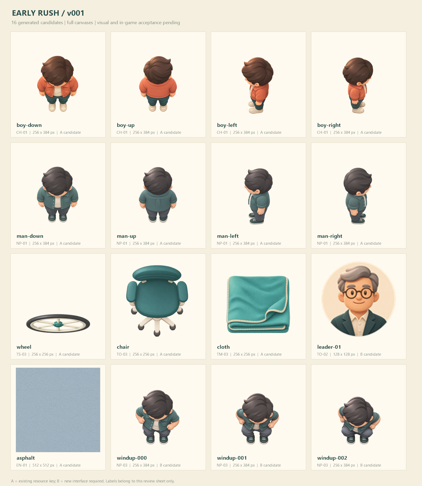
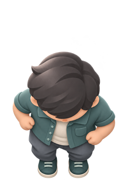
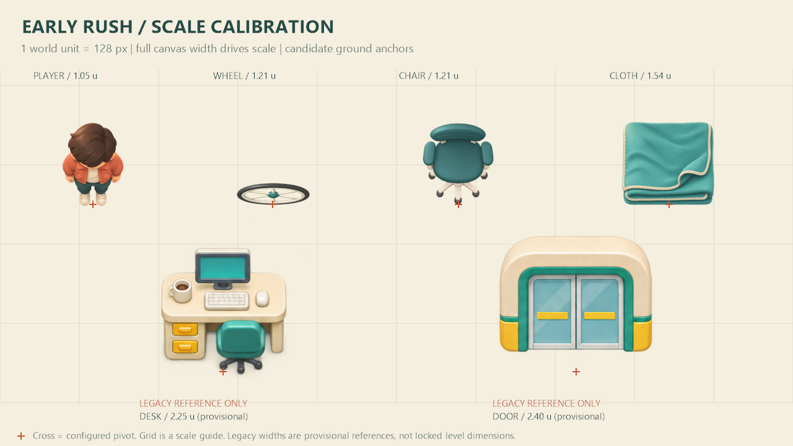
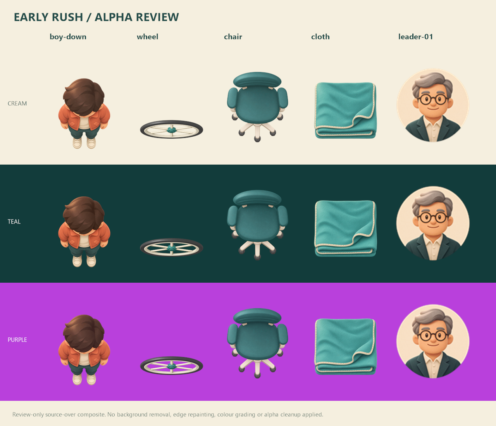

16 candidate assets · full canvases · visual and in-game acceptance pending

One-direction, three-frame candidate. This optional 6 fps review loop does not define gameplay timing.



No seam lines or padding have been added. Inspect the middle horizontal and vertical joins.
Read preview notes for legacy reference sources and review limitations.